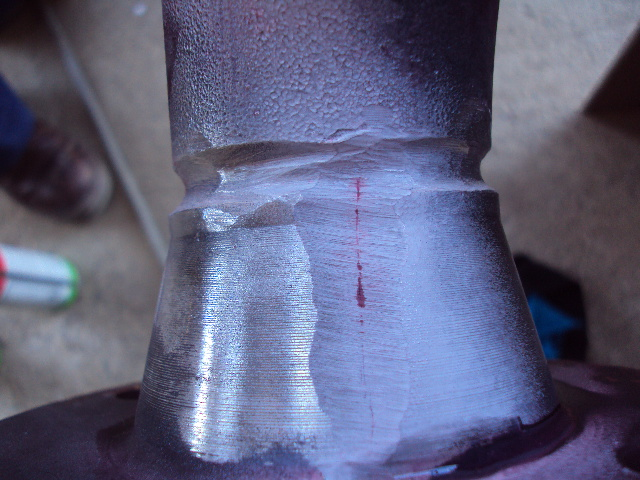
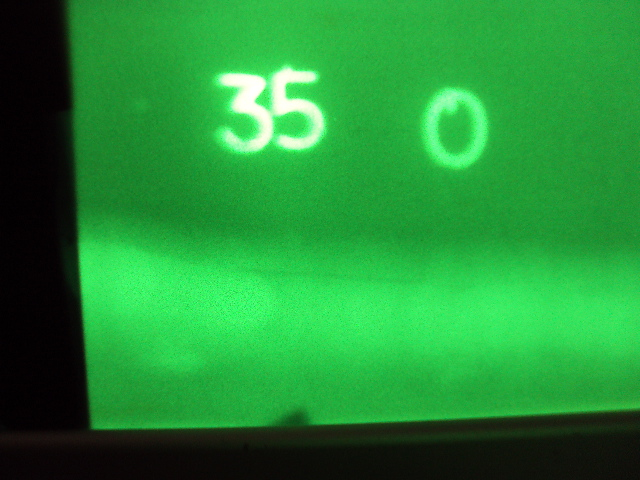
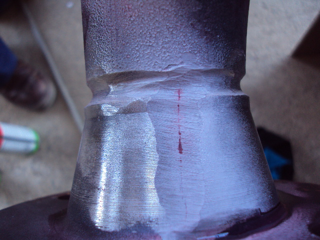
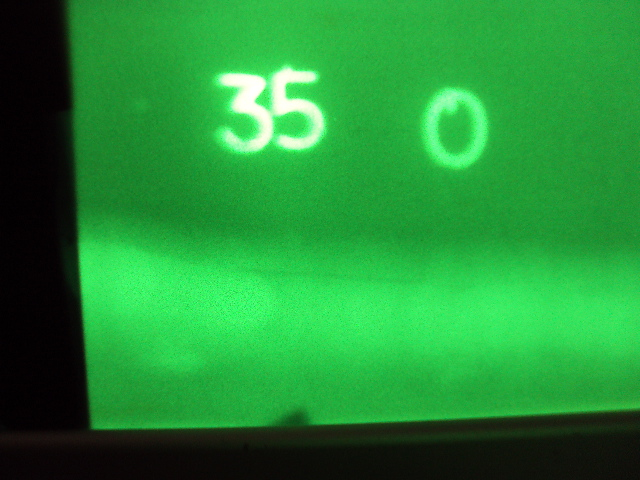

Inspección Visual (VT)
La integridad de la mayoría de las soldaduras se verifica principalmente mediante una inspección visual, la cual todavía constituye una parte importante del control de calidad. Por lo tanto, el examen visual es de primer orden de importancia. Muchos códigos y otras normas exigen que las soldaduras se acepten mediante un examen visual antes de realizar cualquier otro examen no destructivo. El examen visual, el más utilizado de todos los métodos de examen no destructivo, es fácil de aplicar, rápido y, a menudo, no requiere equipo especial más que una buena vista y algunas herramientas relativamente simples y económicas.


Líquidos Penetrantes (PT)
El ensayo por líquidos penetrantes es un método sensible para detectar y localizar discontinuidades, siempre que las discontinuidades estén limpias y abiertas a la superficie. El método emplea un colorante líquido penetrante que se aplica a la superficie debidamente limpia que se va a examinar y que penetra en la discontinuidad por acción capilar. Después de un tiempo de permanencia adecuado, el exceso de penetrante se elimina cuidadosamente de la superficie y la pieza se seca. Luego se aplica un revelador que actúa como secante, sacando el penetrante de la discontinuidad. El penetrante, extraído de una abertura en la superficie, indica la presencia y ubicación de una discontinuidad.


Partículas Magnéticas (MT)
Este método se utiliza para localizar discontinuidades superficiales o cercanas a la superficie en materiales ferromagnéticos. El ensayo de partículas magnéticas se basa en el principio de que las líneas de fuerza magnéticas se distorsionarán por un cambio en la continuidad del material; es decir, una discontinuidad que crea un campo magnético o una fuga de flujo. La corriente eléctrica crea un campo magnético perpendicular al flujo de corriente. Por esta razón, los campos magnéticos se aplican en al menos dos direcciones, perpendiculares entre sí, para asegurar que las áreas de examen se evalúen completamente.
 



Radiografía (RT)
RT es un método de examen no destructivo que utiliza radiación ionizante para penetrar un objeto y revelar información sobre sus condiciones internas. Cuando el objeto de prueba se expone a la radiación ionizante, parte de la radiación se atenúa, parte se dispersa y parte pasa a través del objeto o soldadura al dispositivo de registro. La mayoría de las técnicas radiográficas utilizadas en la actualidad emplean películas radiográficas que registran una imagen latente cuando se exponen a radiación ionizante. También se utilizan otros detectores, como placas de imagen, y se están desarrollando nuevas tecnologías de imagen radiográfica.


Interpretación de películas radiográficas (RT)
La interpretación de películas radiográficas comprende el análisis y evaluación de las imágenes obtenidas por el método de radiografía industrial, para detectar, caracterizar y evaluar la calidad de la película y la calidad del material, además identificar y realizar la evaluación de las posibles indicaciones o defectos en el material inspeccionado, para asegurar así́, la calidad requerida de dicho material, ítem, parte o equipo sometido a examinación.
Ultrasonido (UT)
El examen ultrasónico (UT) es uno de los métodos más utilizados de examen no destructivo. Su principal aplicación es la detección y caracterización de discontinuidades internas. También se utiliza para detectar discontinuidades en la superficie, definir las características de unión y medir el espesor. El método pulso-eco con presentación de datos A-scan se usa más comúnmente para examinar soldaduras. Este sistema utiliza un tubo de rayos catódicos (CRT) o una pantalla digital para mostrar la información del examen.
Medición de espesores (UTM)
Es un método para realizar una medición no destructiva del espesor local de un elemento solido (normalmente hecho de metal, si se utilizan pruebas ultrasónicas para fines industriales) basándose en el tiempo que tarda la onda de ultrasonido en volver a la superficie. Este tipo de medición normalmente se realiza con un medidor de espesor ultrasónico. UTM se usa con frecuencia para monitorear el espesor del metal o la calidad de la soldadura en entornos industriales como la minería. Los técnicos NDT equipados con sondas UTM portátiles alcanzan el revestimiento de acero en los costados, los tanques, las cubiertas y la superestructura. Pueden leer su espesor simplemente tocando el acero con el cabezal de medición (transductor).